Goal: ground a restyle of /resources (currently aeonik + brandYellow + dark cards) into the new editorial style established on /mission and /about (Instrument Serif, IBM Plex Sans, AnimatedHighlight, 674px column, soft black/70).
Method: 11 full-page screenshots via headless chromium across 3 reference sites (index + at least one post each, plus Cursor's changelog).
Closest fit to what we want. Single source of truth for "editorial" on a product site.
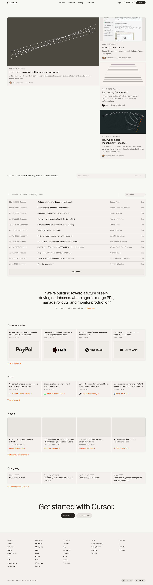
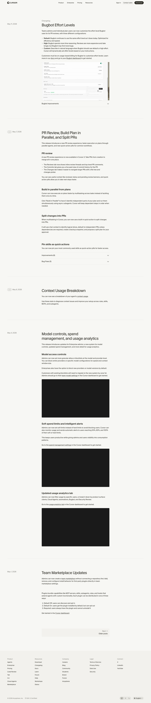
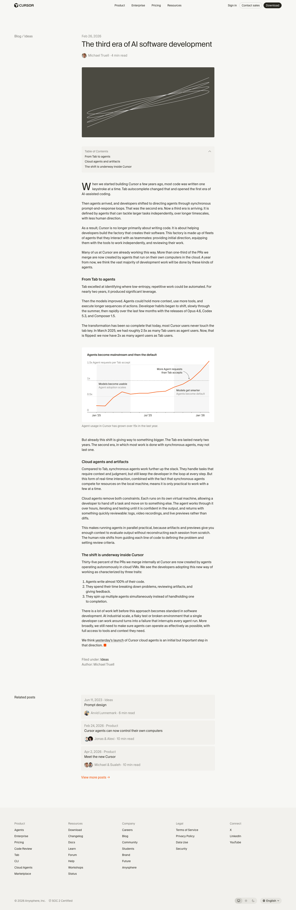
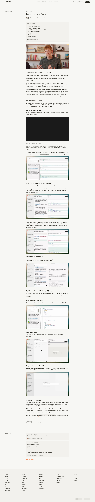
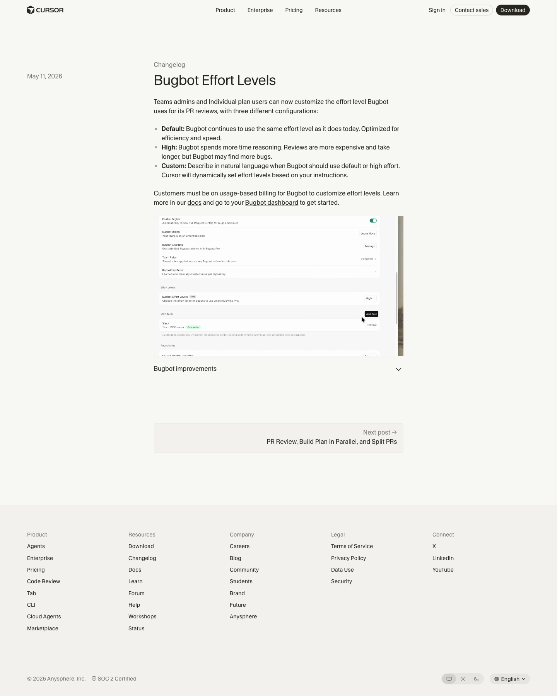
The "magazine" extreme. Most signal for index density and sticky reader chrome.
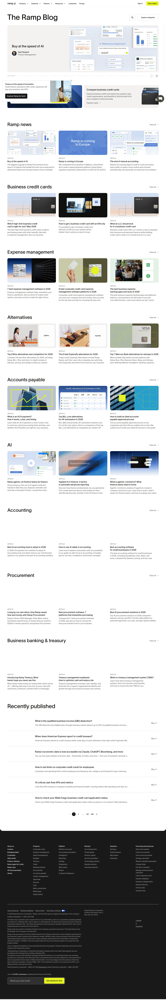
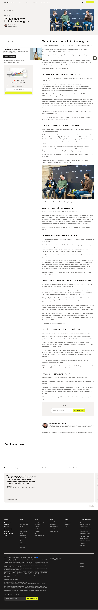
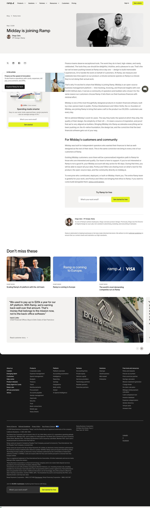
Strong opinion. Dark theme. Useful as a foil.
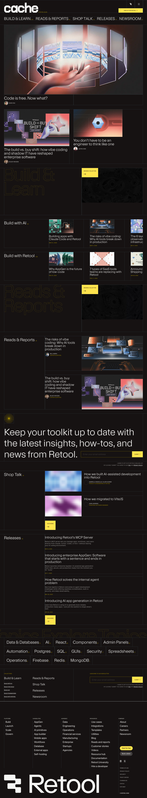
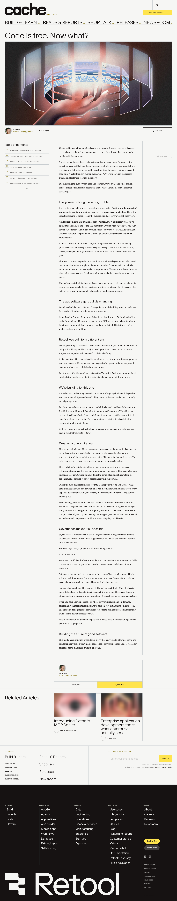
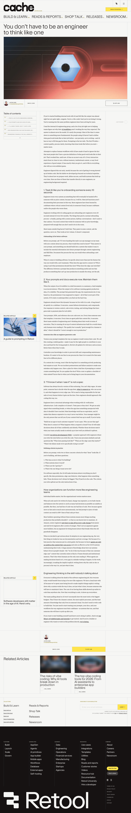
| Pattern | Cursor | Ramp | Retool | Adopt? |
|---|---|---|---|---|
| Category/topic chip above title | ✓ | — | ✓ | yes |
| Author photo + name + date + read time row | ✓ | ✓ | ✓ | yes |
| Cover image full-width inside reading column | ✓ | ✓ | ✓ | yes |
| Narrow centered column (≤ 720px) | ✓ | — | — | yes — match mission's 674px |
| Drop-cap first paragraph | ✓ | — | — | yes, subtle |
| Sticky left rail (TOC + author) | — | ✓ | ✓ | defer — only 1 post, low payoff |
| Related posts grid at footer | ✓ | ✓ | ✓ | yes |
| Category filter chips on index | ✓ | — | ✓ | yes |
| Dense cluster-by-topic index | — | ✓ | — | no — overkill for our volume |
| Tabular post list under featured | ✓ | — | — | yes, eventually |
| Search input on index | ✓ | — | — | defer |
| Dark background | — | — | ✓ | no — continuity with mission/about |
Treat /resources as an editorial column. Three intents:
text-black/70 dark:text-light-80, AnimatedHighlight for inline emphasis, SectionDivider gradient bars. No brandYellow chrome — use highlight-cyan / highlight-pink / highlight-gold..mdx into src/content/blog/, fill frontmatter, done. The MDX components map handles styling. Authors can opt-in to <Highlight variant="cyan">term</Highlight> for inline emphasis directly inside MDX.| Component | Today | Target |
|---|---|---|
BlogHero | aeonik "Resources" | Instrument Serif Field notes with italic emphasis. Sub-line in Instrument Sans. SectionDivider underneath. |
BlogCategories | grid of dark cards, no filter UI | Real filter chip row at top, plus the grid. Restyled cards. |
BlogPostCard | dark bg-light-5 rounded card, aeonik | Image on top with rounded-lg, category chip + read time, Instrument Serif title, IBM Plex Sans excerpt, byline. Hover: subtle title shift to highlight-cyan. |
BlogPostHeader | aeonik title, brandYellow chip outline | Centered. Category chip with subtle border. Instrument Serif title (clamp 32–56px). Instrument Sans excerpt. Author row centered. |
BlogPostImage | bare rounded-lg image | Wrapped to 674px column on sm, wider on lg. Optional caption via coverCaption frontmatter. |
BlogPostContent | aeonik headings, brandYellow accent, prose-invert | Rewrite MDX map. H1/H2/H3 Instrument Serif (italic ok). Body IBM Plex Sans, text-black/70 dark:text-light-80, leading-relaxed. Blockquote: gradient left bar. Code: bg-black/5 dark:bg-white/10. Links: highlight-cyan. Drop cap on first paragraph. |
BlogPostFooter | tags + fake share/bookmark + 2 links + footer chrome | Tags row only. Single back link. 2-up related posts (same category, fallback recent). No bg-light-5 box. |
Expose AnimatedHighlight in the MDX components map. Authors write:
We need to <Highlight variant="cyan">quiet the noise</Highlight> and get back our time.One line in BlogPostContent.tsx: Highlight: AnimatedHighlight.
---
title: "..."
excerpt: "..." # used on cards + meta description
date: "2026-05-11"
author: "Vasudev Menon"
authorImage: "..." # optional
category: "product" # product | ai | engineering | student | company
tags: ["..."]
coverImage: "..." # optional
featured: false # opt-in to 2-up hero grid
readTime: 6 # optional, auto-calculated
---BlogHero (editorial title)
↓
SectionDivider (pink)
↓
[Featured row] — up to 2 cards, larger, side-by-side. Hidden if none.
↓
[Filter chips] — All / Product / AI / Engineering / Student / Company
↓
[All-posts grid] — 3-col lg, 2-col md, 1-col sm
↓
SectionDivider (cyan)
↓
[Newsletter CTA] — optional, skip for v1Breadcrumb
↓
BlogPostHeader (chip, title, excerpt, author row) — centered, 674px max
↓
BlogPostImage (rounded, soft shadow)
↓
BlogPostContent (mdx, 674px column, drop cap on first <p>)
↓
SectionDivider (cyan)
↓
BlogPostFooter (tags, back link, related 2-up)product / engineering / ai / company / student now before more posts.producttrueWill draft once approved. Holding off on code until then.